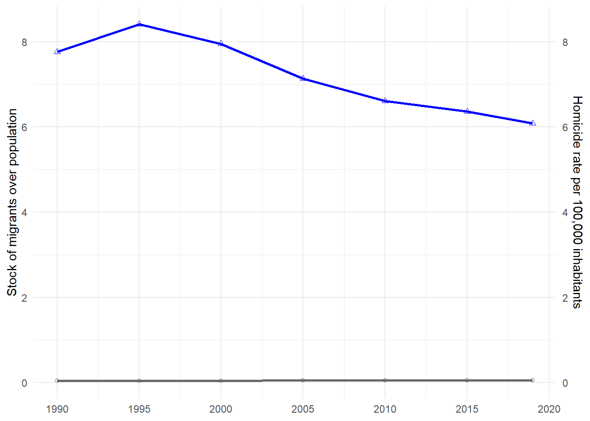

Replication Project for the paper Immigration and Crime: An International Perspective
Authors
Affiliation
Yu-Chiao Tseng 400778357
Hochschule Fresenius
Tawanda Nhundu 400744073
Hochschule Fresenius
Abstract
This is a report of a replication study focusing on the paper titled Immigration and Crime: An International Perspective. It aims to authenticate the results of 2 figures of the authors by attempting to replicate using the programming language R.The replication process has been assisted by AI in code design with the final results to be published on GitHub.This report will cover all the steps to complete the report, the codes used and the problems encountered during the replication.
Introduction
The goal of this project is to conduct a replication study. Our group selected the paper from Olivier Marie and Paolo Pinotti (2024) which explored the association between immigration and crime in the Journal of Economic Perspectives. They found that an increase in the share of immigrants was not accompanied by an increase in the global murder rate.
We will discuss more detail the process of finding papers, how we used R to complete this replication study, the challenges we encountered, and how we published our report on GitHub. Lastly, we will summarize the learning process.
Motivation for Replication
Academic research nowadays values transparency and credibility, and replication studies are an important way to verify these.There are some researchers manipulate data to achieve the results they want, and replication studies can confirm that the author’s research results are not accidental or the result of incorrect analysis method. The importance of research in science and academic knowledge is self-evident. According to Bouter & ter Riet (2021) replication is divided into three different levels. First, reanalysis of the original study by re‑running their exact code and dataset, to verify that the published figures and tables can be fully reproduced. The second one is direct replication which means replicate with new data but the same research protocol. The third one is conceptual replication, researchers use new data with the modified research protocol and same research question. In the project I think we did re‑analysis, we used the data provided by the authors and the same data analysis plan.Using the world bank data as weight can be a conceptual replication. Bouter & ter Riet mentioned that by varying data sources or methods, conceptual replications can reveal whether a finding can be use in different context and proof it validity and generalizability. In contrast, reanalyses or direct replications which rely on the same dataset or same procedures might reproduce the flaws that were present in the original study.
We selected two papers, “Inside the Box” and “Immigration and Crime” at the beginning. The first one was written by an author who used R to do most of his work, so the professor suggested that we choose another one. In the article “Immigration and Crime”, the author used Stata for coding. The article explored the relationship between immigration and crime. Living abroad as students, we felt that the increase in immigration in many countries in recent years has brought benefits such as filling the labor gap in developed countries, but it has also caused many conflicts between immigrants and locals. Many people believe that immigrants cause public security problems and have low tolerance for them. Seeing this trend, enhanced our interest in this topic, and we hope to learn more about the content of the article and how the author conducts statistical analysis and explores this issue.
The authors Olivier Marie and Paolo Pinotti cleaned, merged, and statistically analyzed the United Nations’ immigration and crime data to explore whether there is a significant correlation between immigration and crime. They also referred to other studies to further explore whether obtaining legal status reduces the tendency to commit crimes. We chose Figure 2 and Figure 4 for replication. First, we read the author’s README file and Stata code to confirm the feasibility and verify whether the data set can be accessed from the websites they provided.
Figure 2 Top Replication Process
Figure 2 is composed of two figures, the first one is a double y-axis graph, showing the long-term trend of the “proportion of immigrants to the total population” gray line and the “murder rate” blue line in 55 countries (1990-2019). The second figure is a scatter plot, showing how much the “number of immigrants” in each country changed from 1990 to 2019 and how much the “murder rate” changed during the same period (calculated in logarithms).
This part relies on chatgpt’s explanation to understand the meaning of each code collapse homic migr [aw=pop1990], by(year) is grouped by year, and the variables homic and migr are weighted averaged (weight is pop1990), Two-way connected plot is a two-line graph, connected migr year, color(gs8) msymbol(circle_hollow) draws the first line (left Y axis), connected homicide_rate year, color(blue) msymbol(triangle_hollow) yaxis(2) draws the second line (right Y axis). Then I created a new file in R and saved the data provided by the author.
ChatGPT guided me step by step to reproduce this grpah in R.
#| warning: false#| warning-html: false#| echo: true#| include-pdf: false#| echo-html: true#| results-pdf: "hide"# Install pacman if necessary, then use it to install/load everythingif (!requireNamespace("pacman", quietly =TRUE)) install.packages("pacman")pacman::p_load( knitr, # R Markdown engine rmarkdown, # document rendering papaja, # APA‐style support (optional) haven, # read/write Stata/SAS/SPSS dplyr, # data wrangling tidyr, # data reshaping ggplot2, # plotting scales, # axis formatting ggrepel # non‐overlapping text labels )# 2. Read the Stata datasetdf <-read_dta("DATA/cross_country_data_homicide_migration.dta")# 3.Inspect the data# 1) Print the first few rows# head(df)# 2) Show column names# names(df)# 3) Count the number of rows# nrow(df)# 4. Compute population‐weighted time seriests <- df %>%group_by(year) %>%summarize(# Weighted average of migrant stock over populationmigr_w =sum(migr_pop * pop1990) /sum(pop1990),# Weighted average of homicide ratehom_w =sum(homicide_rate * pop1990) /sum(pop1990))# 5. Confirm ts were created correctly# head(ts)# str(ts)# See a small data frame with columns year, migr_w, and hom_w.# 6. Draw the dual-axis time-series plotlibrary(ggplot2)p1 <-ggplot(ts, aes(x = year)) +# Left axis: gray line + hollow circles = migrant sharegeom_line(aes(y = migr_w), color ="grey40", linewidth =1) +geom_point(aes(y = migr_w), color ="grey40", shape =21) +# Right axis: blue line + hollow triangles = homicide rategeom_line(aes(y = hom_w), color ="blue", linewidth =1) +geom_point(aes(y = hom_w), color ="blue", shape =24) +# Add a secondary y‐axis for homicide ratescale_y_continuous(name ="Stock of migrants over population",sec.axis =sec_axis(~ ., name ="Homicide rate per 100,000 inhabitants")) +# X‐axis ticks at 1990, 1995, …, 2020scale_x_continuous(breaks =seq(1990, 2020, 5)) +theme_minimal() +theme(axis.title.x =element_blank()) # Remove x‐axis title# Display itprint(p1)

(OpenAI, 2025)
Here is the first problem
As we can see, the gray line on the graph made according to the above code is almost attached to the bottom of the graph. I asked Chatgpt, and it said that the gray “immigrant proportion” line is always close to 0. This is because the dual Y axes of ggplot2 are not truly “independently scaled”, but share a set of numerical spaces. hom_w (murder rate) is about 6 to 9, and migr_w (immigrant proportion) is about 0.03 to 0.055. After looking at the graph, I also noticed that the scales on both sides of my graph are 0-8, while the scale on the left side of the author’s graph is 0.035-0.055.
Then ChatGPT Offered Solution:
Figure 3. Soluction for flat gray line
Here I follow the instruction, use y = hom_w / sf when drawing the blue line (equivalent to “compressing” the murder rate to the small interval of the proportion of immigrants), Then use sec_axis(~ . * sf) to “expand” the label on the right back to the true murder rate value. After following the steps of chatgpt, the two lines are in the correct position. Lastly, I corrected the scales on both sides to 0.035-0.055 on the left axis and 6-8.5 on the right axis.
#| warning: false#| warning-html: false#| echo: true#| include-pdf: false#| echo-html: true#| results-pdf: "hide"df <-read_dta("DATA/cross_country_data_homicide_migration.dta")# Compute population‐weighted time seriests <- df %>%group_by(year) %>%summarize(# Weighted average of migrant stock over populationmigr_w =sum(migr_pop * pop1990) /sum(pop1990),# Weighted average of homicide ratehom_w =sum(homicide_rate * pop1990) /sum(pop1990))# Confirm ts were created correctly# head(ts)# str(ts)sf <-max(ts$hom_w) /max(ts$migr_w)# the correct step# Define the right axis scaleright_breaks <-seq(6, 8.5, by =0.5)left_breaks <- right_breaks / sf # Convert to left axis scale# draw the graphp1 <-ggplot(ts, aes(x = year)) +geom_line(aes(y = migr_w), color ="grey40", linewidth =1) +geom_point(aes(y = migr_w), color ="grey40", shape =21) +geom_line(aes(y = hom_w / sf), color ="blue", linewidth =1) +geom_point(aes(y = hom_w / sf), color ="blue", shape =24) +scale_y_continuous(name ="Stock of migrants over population",limits =c(0.035, 0.055),breaks =seq(0.035, 0.055, by =0.005),sec.axis =sec_axis(~ . * sf,name ="Homicide rate per 100,000 inhabitants",breaks = right_breaks,labels = right_breaks ) ) +scale_x_continuous(breaks =seq(1990, 2020, by =5)) +theme_minimal() +theme(axis.title.x =element_blank())print(p1)
After following the steps of ChatGPT, the two lines are now in the correct position. Lastly, I corrected the scales on both sides to 0.035-0.055 on the left axis and 6-8.5 on the right axis to make it more alike to original one.
I also noticed that the gray line ended up closer to 8.5, while the original graph looked between 8 and 8.5. I asked ChatGPT and checked three things according to it’s instructions. 1. Did I draw 2020 ? 2. Confirm that migr_pop is a proportion, not a number of people 3. Re-ensure that the weighted average uses the pop1990 column I checked all of them, but the graph did not change. ChatGPT said that it might be that the weighting method in Stata is slightly different from the implementation details in R, or that the original graph was slightly adjusted manually when it was published.(OpenAI, 2025) I remember learning in the course last semester that the key to doing replication is to be able to reproduce the results and trends that the chart wants to present after following the code provided by the author and the same method. In this graph, the direction of the lines is consistent with the changes (immigration increased, murders decreased), and the values are roughly in the same area, with no obvious misalignment or data errors. I think the points where the two lines fall and where they intersect are not significantly different from the original graph, so I believe this is a successful replication.
Discussion on Figure 2 top
Figure 2 top graph uses United Nations immigration data. I think the author could be more precise on that. Did they use International migrant stock from United Nations data or Total population, or both? At first, I compared the numbers on the data and the website, and found that there was a slight difference between the total population on the website and the file provided by the author. For example, the total population of Australia in 1990 was 16960.600 in the author’s data and 17126.298 on the website. The total population of Armenia in 1990 was 3538.164, and 3552.128 on the website. I thought that this might be because the data on the website had been updated. If the difference was not big, I thought the data provided by the author was credible, so I directly used the author’s data for replication. Later, I further wanted to confirm where the number of migr_pop in the author’s file came from, but I couldn’t calculate a similar number. Finally, I realized the problem is that I downloaded the latest version of the data, and the author used the 2020 version. The latest version is Armenia 1990 Total population at mid-year 3552.128, migrant stock 433541. The version used by the author, Armenia 1990 Total population at mid-year 3538.164, migrant stock has been updated a lot, which led to my calculation of 433541/3552.128 ≈0.1225, not ≈0.186. Another issue was the numbers for migrant stock are missing from the file provided by the authors; it has only the author’s own calculation of migr_pop 0.186195165. I think the author’s readme file can include the file year used and how migr_pop is calculated. This can improve the overall transparency and credibility of the research and reduce disputes over errors caused by different versions.
Figure 2 Bottom Replication Process
The bottom plot is the logarithmic change scatter plot + weighted regression line for 1990 vs. 2019. X axis: log change migration, Y axis: log change homicides.
Figure 4. the original Stata code for Figure 2 bottom
Same I followed the instructions of ChatGPT to do the steps, first select 1990 and 2019 from the original data
#| warning: false#| warning-html: false#| echo: true#| include-pdf: false#| echo-html: true#| results-pdf: "hide"df2 <- df %>%filter(year %in%c(1990, 2019)) %>%select(code, year, migr_pop, homicide_rate, pop1990)# Use head(df2) to check and confirm that there are only data from 1990 and 2019 then generate ln_migr, ln_homic and pivot_widerdf3 <- df2 %>%mutate(ln_migr =log(migr_pop),ln_homic =log(homicide_rate)) %>%#Add two new columns, the logarithm of the immigration ratio and the homicide rate.select(code, year, ln_migr, ln_homic, pop1990) %>%#Keep code, year, ln_migr, ln_homic, pop1990pivot_wider(names_from = year,values_from =c(ln_migr, ln_homic),names_sep ="_") # Split year (1990/2019) into ln_migr_1990, ln_migr_2019, ln_homic_1990, ln_homic_2019# Use head(df3) str(df3) to confirm that the column names are consistent with expectationsdf4 <- df3 %>%mutate(dln_migr = ln_migr_2019 - ln_migr_1990,dln_homic = ln_homic_2019 - ln_homic_1990) #Continue to calculate logarithmic differencehead(df3)
str(df3) # Confirm that there are the following columns (and they are all numeric): code, pop1990, ln_migr_1990, ln_migr_2019, n_homic_1990, ln_homic_2019
It looks very similar to the original image, and then I adjusted the scale.
#| warning: false#| warning-html: false#| echo: true#| include-pdf: false#| echo-html: true#| results-pdf: "hide"p2 <-ggplot(df4, aes(x = dln_migr,y = dln_homic,weight = pop1990 )) +geom_point(shape =21, fill =NA, color ="black") +geom_text_repel(aes(label = code), size =3, segment.size =0) +geom_smooth(method ="lm", se =FALSE, color ="blue") +scale_x_continuous( # Change the x-axis to -4…4 Each scale interval is 2 degreeslimits =c(-4, 4),breaks =seq(-4, 4, by =2) ) +scale_y_continuous( # Change the y-axis to -2…2 Each scale interval is 1 degreelimits =c(-2, 2),breaks =seq(-2, 2, by =1) ) +theme_minimal(base_size =38) +# Font size adjustmenttheme(panel.grid.minor =element_blank(),panel.grid.major =element_line(color ="grey90", linewidth = .3),axis.text =element_text(size =9),axis.title =element_text(size =10) ) +labs(x ="Log change migration, 1990–2019",y ="Log change homicides, 1990–2019" )print(p2)
`geom_smooth()` using formula = 'y ~ x'
Warning: Removed 1 row containing non-finite outside the scale range
(`stat_smooth()`).
Warning: Removed 1 row containing missing values or values outside the scale range
(`geom_point()`).
Warning: Removed 1 row containing missing values or values outside the scale range
(`geom_text_repel()`).
Lastly, I use the code theme_minimal(base_size = 38) for the font size adjustment. I think this graph shares the same idea that the author wants to present in the paper. There is a nearly horizontal regression line, and most countries are concentrated between -1 and 1 on the X axis. This means that the proportion of immigrants and the murder rate in most countries have not experienced a huge change. If more immigrants lead to higher crime, there will be a cluster in the upper right corner of the graph. However, the graph shows that there is no consistent trend or causal relationship between changes in immigration and changes in murder rates.
Using World Bank population data as weight
Because the group before us had some data generation problems, they didn’t seem to use the data used by the author, but the graph was produced. The professor said that their data might be generated by ChatGPT itself, and then said that they could go to the World Bank to find the data they needed. At that time, I thought I had to use the World Bank data, so I used the World Bank data to make the second graph. But I didn’t give ChatGPT instructions clear enough; I just said that I wanted to use the World Bank population data to make a new graph.So ChatGPT gave me the code:
Warning: There was 1 warning in `mutate()`.
ℹ In argument: `code = countrycode(iso2c, "iso2c", "iso3c")`.
Caused by warning:
! Some values were not matched unambiguously: JG, XK
Because I used the total population of all years from 1990 to 2019, what I got was the “weighted average of the population distribution of that year”, which means that the weights change every year. Actually, I don’t need the total population of all years from 1990 to 2019. I only need to replace the 1990 population (pop1990) with World Bank’s data, because the author used only the 1990 population (pop1990) as the weight for all periods.
Second time, I only used the 1990 population as the weight for the whole period, and I still use the migr_pop calculated by the author as a share.
#| warning: false#| warning-html: false#| echo: true#| include-pdf: false#| echo-html: true#| results-pdf: "hide"# 3. Pull down the World Bank 1990 total population, named pop1990pop90 <-WDI(country = iso3c_vec,indicator ="SP.POP.TOTL",start =1990,end =1990,extra =FALSE) %>%# WDI will return a column called iso2c, we mutate iso3c directly from itmutate(iso3c =countrycode(iso2c, "iso2c", "iso3c")) %>%select(iso3c, pop1990 = SP.POP.TOTL)# 4. Read the .dta provided by the authordf <-read_dta("DATA/cross_country_data_homicide_migration.dta")# 5. Use the pop1990 pulled down by WDI to **overwrite** the pop1990 in the original filedf2 <- df %>%rename(iso3c = code) %>%# Make sure it is consistent with pop90select(-pop1990) %>%# Delete the original pop1990left_join(pop90, by ="iso3c") # Add back the new pop1990# 6. Use the new pop1990 to do population weighted aggregationts_df <- df2 %>%filter(year <=2019) %>%group_by(year) %>%summarise(migr_w =sum(migr_pop * pop1990, na.rm=TRUE) /sum(pop1990, na.rm=TRUE),hom_w =sum(homicide_rate * pop1990, na.rm=TRUE) /sum(pop1990, na.rm=TRUE))sf <-max(ts$hom_w) /max(ts$migr_w)# Define the right axis scaleright_breaks <-seq(6, 8.5, by =0.5)left_breaks <- right_breaks / sf p1 <-ggplot(ts, aes(x = year)) +geom_line(aes(y = migr_w), color ="grey40", linewidth =1) +geom_point(aes(y = migr_w), color ="grey40", shape =21) +geom_line(aes(y = hom_w / sf), color ="blue", linewidth =1) +geom_point(aes(y = hom_w / sf), color ="blue", shape =24) +scale_y_continuous(name ="Stock of migrants over population",limits =c(0.035, 0.055),breaks =seq(0.035, 0.055, by =0.005),sec.axis =sec_axis(~ . * sf,name ="Homicide rate per 100,000 inhabitants",breaks = right_breaks,labels = right_breaks ) ) +scale_x_continuous(breaks =seq(1990, 2020, by =5)) +theme_minimal() +theme(axis.title.x =element_blank())print(p1)
Discussion of using the data from the World Bank incorrectly
This graph looks very different from the last graph with mistakes, and doesn’t look significantly different from the first time I used the data provided by the author.
This time, I used the data from the World Bank incorrectly and didn’t notice it at all. I intuitively thought that the graph looked different only because I used the data from the World Bank. This caused me to be embarrassed during my oral presentation.
Problems with making a scatter plot at the bottom
I also tried to make the bottom plot using the data from the World Bank, but the problem I had was scatter plots did not appear.
#| warning: false#| warning-html: false#| echo: true#| include-pdf: false#| echo-html: true#| results-pdf: "hide"# Load necessary packageslibrary(dplyr)library(tidyr)library(ggplot2)library(ggrepel)library(WDI)library(countrycode)# 1) As long as these 55 countriesiso3_codes <-c("ARM","AUS","AUT","AZE","BGR","BIH","BLR","BRA","CAN","CHE","COL","CRI","DEU","DNK","ECU","ESP","EST","FIN","FRA","GBR","GEO","GRC","HKG","HND","HRV","IND","IRL","ITA","JAM","JPN","KGZ","KOR","LKA","LTU","MAR","MDA","MEX","MUS","NLD","NOR","PAK","PAN","PHL","POL","PRI","PRT","ROU","RUS","SGP","SVK","SVN","SWE","URY","USA","VEN")# 2) Filter out 1990 & 2019 from df (the complete data frame you read_dta() before)df2 <- df %>%filter(code %in% iso3_codes, # Only select these 55 countriesyear %in%c(1990, 2019)) %>%# Only 1990/2019mutate(ln_migr =log(migr_pop),ln_homic =log(homicide_rate))# 3) Get the total population of the World Bank# (First grab all years, then join and then pivot)wb_pop <-WDI(country ="all",indicator ="SP.POP.TOTL",start =1990,end =2019,extra =TRUE) %>%filter(region !="Aggregates") %>%mutate(code =countrycode(iso2c, "iso2c", "iso3c")) %>%select(code, year, pop_total = SP.POP.TOTL)
Warning: There was 1 warning in `mutate()`.
ℹ In argument: `code = countrycode(iso2c, "iso2c", "iso3c")`.
Caused by warning:
! Some values were not matched unambiguously: JG, XK
# 4) Merge, widen, calculate log-changedf_sc <- df2 %>%left_join(wb_pop, by =c("code","year")) %>%pivot_wider(names_from = year,values_from =c(ln_migr, ln_homic, pop_total),names_sep ="_") %>%mutate(dln_migr = ln_migr_2019 - ln_migr_1990,dln_homic = ln_homic_2019 - ln_homic_1990) %>%filter(!is.na(pop_total_1990)) # Only keep those with 1990 population# 5) If you want to confirm how many records there are# cat("Rows to plot:", nrow(df_sc), "\n")# 6) Plotggplot(df_sc, aes(x = dln_migr,y = dln_homic,weight = pop_total_1990 # With 1990 Population Weighted)) +geom_point(shape=21, fill=NA, color="black") +geom_text_repel(aes(label=code), size=3) +geom_smooth(method="lm", se=FALSE, color="blue") +theme_minimal(base_size =12) +labs(title ="Immigration and homicides (pop. weighted)",x ="Log change migration, 1990–2019",y ="Log change homicides, 1990–2019")
`geom_smooth()` using formula = 'y ~ x'
Warning: Removed 54 rows containing non-finite outside the scale range
(`stat_smooth()`).
Warning: Removed 54 rows containing missing values or values outside the scale range
(`geom_point()`).
Warning: Removed 54 rows containing missing values or values outside the scale range
(`geom_text_repel()`).
I asked ChatGPT why this code can’t make a scatter plot; the plot is blank, there is no dots. At first, it couldn’t find the reason, and ChatGPT kept going around in circles. After hours, I changed the conversation to a new chat room and re-posted the code. It finally works and I just checked it step by step according to its instructions. For example, check whether there are rows in the final data frame, and also check setdiff(unique(df2\(code), unique(wb_pop\)code)) See which countries are not in wb_pop.
Finally, we found the problem, and ChatGPT explained it this way: The problem is in the plot data frame, all rows corresponding to x = dln_migr or y = dln_homic are treated as NA, so ggplot automatically discards them.
The solution provided from ChatGPT is to keep only the columns I need before pivoting
Figure 6 Solution for blank scattor plot
(OpenAI, 2025)
After correcting according to the instructions, the scattered points appeared.
#| warning: false#| warning-html: false#| echo: true#| include-pdf: false#| echo-html: true#| results: "asis"# Install the packagelibrary(dplyr)library(tidyr)library(ggplot2)library(ggrepel)library(WDI)library(countrycode)# 1) select the 55 countriesiso3_codes <-c("ARM","AUS","AUT","AZE","BGR","BIH","BLR","BRA","CAN","CHE","COL","CRI","DEU","DNK","ECU","ESP","EST","FIN","FRA","GBR","GEO","GRC","HKG","HND","HRV","IND","IRL","ITA","JAM","JPN","KGZ","KOR","LKA","LTU","MAR","MDA","MEX","MUS","NLD","NOR","PAK","PAN","PHL","POL","PRI","PRT","ROU","RUS","SGP","SVK","SVN","SWE","URY","USA","VEN")# 2) Filter out 1990 & 2019 from df (the complete data frame read_dta() previously)df2 <- df %>%filter(code %in% iso3_codes, # filter the 55 countries year %in%c(1990, 2019)) %>%# only 1990/2019mutate(ln_migr =log(migr_pop),ln_homic =log(homicide_rate) )# cat("df2 rows:", nrow(df2), "\n")# print(head(df2))# 3) Get the total population from the World Bank# (first grab all years, then join and then pivot)wb_pop <-suppressWarnings({WDI(country ="all",indicator ="SP.POP.TOTL",start =1990,end =2019,extra =TRUE ) %>%filter(region !="Aggregates") %>%mutate(code =countrycode(iso2c, "iso2c", "iso3c")) %>%select(code, year, pop_total = SP.POP.TOTL)})# 4) Merge, widen, and calculate log-changedf_sc <- df2 %>%left_join(wb_pop, by =c("code","year")) %>%select(code, year, ln_migr, ln_homic, pop_total) %>%# ← remove population、homicide_rate、migr_pop pivot_wider(names_from = year,values_from =c(ln_migr, ln_homic, pop_total),names_sep ="_" ) %>%mutate(dln_migr = ln_migr_2019 - ln_migr_1990,dln_homic = ln_homic_2019 - ln_homic_1990 ) %>%filter(!is.na(pop_total_1990),!is.na(dln_migr),!is.na(dln_homic) )# 5) Check the amount of rows of data# cat("Rows to plot:", nrow(df_sc), "\n")df_tmp <- df2 %>%left_join(wb_pop, by =c("code","year")) %>%pivot_wider(names_from = year,values_from =c(ln_migr, ln_homic, pop_total),names_sep ="_" )# print(head(df_tmp))# check the rows after pivot# cat("Rows after pivot:", nrow(df_tmp), "\n")with(df_sc, summary(dln_migr))
Min. 1st Qu. Median Mean 3rd Qu. Max.
-2.6146 -0.2811 0.2761 0.2960 0.8171 3.1155
with(df_sc, summary(dln_homic))
Min. 1st Qu. Median Mean 3rd Qu. Max.
-2.27727 -0.88754 -0.59014 -0.45285 -0.04651 1.37231
suppressWarnings(ggplot(df_sc, aes(x = dln_migr, y = dln_homic)) +geom_point(shape =21, fill =NA, color ="black") +geom_text_repel(aes(label = code), size =3) +geom_smooth(method ="lm",se =FALSE,aes(weight = pop_total_1990)) +scale_x_continuous(limits =c(-4, 4),breaks =seq(-4, 4, by =2) ) +scale_y_continuous(limits =c(-2, 2),breaks =seq(-2, 2, by =1) ) +theme_minimal(base_size =12) +labs(title ="Immigration and homicides (pop. weighted)",x ="Log change migration, 1990–2019",y ="Log change homicides, 1990–2019" ))
`geom_smooth()` using formula = 'y ~ x'
Warning: Removed 1 row containing non-finite outside the scale range
(`stat_smooth()`).
Warning: Removed 1 row containing missing values or values outside the scale range
(`geom_point()`).
Warning: Removed 1 row containing missing values or values outside the scale range
(`geom_text_repel()`).
Figure 4
Replication Figure 4, titled Summary of Estimates of the Impact of Immigration on Crime attempts to look at the immigration on crime of 4 different countries. It attempts to do this by using a shift share approach to determine whether increases in immigrants correlates with increases in crime. This, however, does only provide casual estimates in these two points. The paper uses two statistical methods in this figure, ordinary least square estimates (OLS) and casual shift share estimates, both with a 95 percent confidence intervals.
To look at the impact of immigration on crime, the paper does not actually produce its own first-hand data, but rather analyses the data from four other papers which looked at four countries respectively. The countries and respective papers are Italy (Bianchi, Buonanno, and Pinotti 2012), United Kingdom (Bell, Fasani, and Machin 2013), United States (Spenkuch 2010) and Chile (Ajzenman, Domínguez, and Undurraga 2020). However, all four papers gather their data with different methods, and therefore, the analysis, and decision of how they the papers analysis these data in down to the authors discretion, which became a problem for the data replication which will be spoken about later.
Original Figure 4
The original figure 4 is a type of forest plot. It compares both the relationship between immigration and crime looking at both effects on property such as burglary or home owners increasing security and general crime. As said before, because each of the for papers can use different categorisations for what falls under these terms, this are statistical estimations, with the choices of what falls under these categories left to the authors discretion. Forest plots are powerful graphical displays for meta-analyses and systematic reviews as they help summarise and compare the results of multiple scientific studies. The plot helps to visualise the estimated differences between many studies which is most likely why the authors decided to use it here. Furthermore, within each study, the authors were able to compare both the OLS and casual shift shares. However, because these are estimates, this makes it a good candidate to perform a replication study to avoid any biases from the authors affecting their interpretation of their chosen studies results.
Figure 7 Original graph of Figure 4
Replication of Figure 4 from the Replication Package
Initially to confirm the feasibility of replicating the data, before accessing the replication packages of the original four papers to do the complete data replication, it was decided to first replicate the author’s data. Due to the fact that the authors performed their own analysis, it was still necessary to confirm whether the authors correctly produced their figures correctly from the data they provided in their own replication package. Therefore, to confirm figure 4’s accuracy, first it was necessary to reproduce their figure. However, the data used within their replication package was a Stata document rather than a format that could be used directly in R. The Stata file relevant to figure 4 was titled “literature.dta”. The data was first uploaded into the RStudio Cloud workspace for further analyses. Due to the file being a Stata file, there was a two-fold reason for converting the data into an Excel spreadsheet, one for personal sake, and the other due to it not being a native Quatro file format. Therefore it was first necessary to convert the data.
Fortunately, the steps to convert this file was not difficult with the packages haven, writexl, dplyr and readxl this was achievable. This brings the importance of knowing what the format of the data to be analysed for a replication study is. There are many computer programming languages, with various researchers deciding on what language to use depending on what research they are doing. Fortunately at this time of AI tools, it is much easier to figure out what the best means are to change the data into a format usable y the programming tool you are using. Gemini was also able to suggest the ways to use certain packages to convert the data into a readable format. Initially the packages were downloaded and used to read the data. Then, with writexl, the data was successfully converted into an .xlsx file with the same “literature” name.
if (!requireNamespace("pacman", quietly =TRUE)) install.packages("pacman")pacman::p_load(haven, writexl, dplyr, readxl)
my_data <-read_dta("literature.dta")
write_xlsx(my_data, "literature.xlsx")
# Load the Excel filedf <-read_excel("literature.xlsx")# Keep only the specified columnsdf_selected <- df %>%select(Paper_long, Country, Group, Coef, C_low, C_high)# View the resulthead(df_selected)
# A tibble: 6 × 6
Paper_long Country Group Coef C_low C_high
<chr> <chr> <chr> <dbl> <dbl> <dbl>
1 Bianchi Buonanno & Pinotti 2012 ITA Immigration 0.046 -0.248 0.34
2 Bianchi Buonanno & Pinotti 2012 ITA Immigration 0.084 0.0291 0.139
3 Bianchi Buonanno & Pinotti 2012 ITA Immigration 0.003 -0.162 0.168
4 Bianchi Buonanno & Pinotti 2012 ITA Immigration -0.036 -0.313 0.241
5 Bell Fasani & Machin 2013 UK Immigration -0.386 -0.545 -0.227
6 Bell Fasani & Machin 2013 UK Immigration -0.061 -0.11 -0.012
Figure 8. Table of the Stata File Titled literature
Image of the Stata File Titled literature.
Once this was done an .xlsx file was created, it was then necessary to find out which data within the table were used to create the figure. Due to the data in the .xlsx file not being too large, it was decided to first look at the data within the spreadsheet to determine whether it was possible to understand it, or whether it was best to use Quatro to parse the information as to what may or may not be relevant as compared to the figure.
Due to this data being pre-analysed by the authors, it was not necessary to make any changes to it. Due to this just being a confirmation that the authors correctly converted their data into a figure, it was not necessary to worry as to whether the data needed any analyses, or just to look for the same numbers and labels which were shown in the figure the authors presented in their paper. For the figure it was determined that the data used were Coef for the estimated value, and C_low for the lower boundary and C_high for the upper boundary. These, including other necessary values were decided were the only values necessary to be kept from the table. The information as to how these labels corresponded to what was shown in the figure was determined bu matching the numbers seen in the table to the figure. However, C_low and C_high are pretty self-explanatory, but the fact that the authors decided to use the label Coef for the estimate could have caused confusion if the number didn’t match. This is another example of why replication studies could be difficult as authors may use their own labels in their replication packages which could cause difficulties when trying to replicate other studies results.
To do this, the select function was used. Gemini recommended changing the name of the data that was selected from the literature file as “data_for_the_plot” most likely to avoid any confusion as to which data is which. While only selected data was successfully taken from the table, it was not organised in the best way to create the figure. Therefore, the tribble function was used to reorganise the data. The tribble function is a part of the tibble package (which it itself is a part of the tidyverse ecosystem). This meant that installing the tidyverse package would include them both. The tribble function would allow the data to be organised in a row-wise figuration instead of columns. Once this was successfully done, a step by step process using Gemini was used to recreate the original figure as closely as possible.
Next, the data was organised in such a way that would particularly fit the structure and design of the forest plot; # Ensure ‘Study’ is ordered correctly for plotting data_for_plot\(Study <- factor(data_for_plot\)Study, levels = c(“ADU, 2021nChile”, “SPE, 2014nUnited States”, “BFM, 2013nUnited Kingdom”, “BBP, 2012nItaly”)) There was some difficulty in getting everything to align the way the figure looked in the paper, so Gemini recommended dodging the data in such a way that everything aligned well; # Define a common dodging position to slightly offset the lines vertically dodge_pos <- position_dodge(width = -0.4) # Negative width to put OLS above Shift Share.
Finally, with the assistance of Gemini matching the design to the original figure, the design, colours and set up were created using ggplot. Some tweaking was needed to be performed before these values were achieved to get the data points to align correctly; # Use facetted_pos_scales from ggh4x to set different x-axis scales per facet facetted_pos_scales( x = list( Category == “Property” ~ scale_x_continuous( limits = c(-0.6, 0.4), breaks = seq(-0.6, 0.4, by = 0.2), labels = scales::number_format(accuracy = 0.1) ), Category == “Violent” ~ scale_x_continuous( limits = c(-0.4, 0.4), breaks = seq(-0.4, 0.4, by = 0.2), labels = scales::number_format(accuracy = 0.1) ) ) ) + A very closely matching figure was created, which essentially was the same as the authors had created. It can be said with great confident that the author’s figure matches the data within their replication package.
#| warning: false#| warning-html: false#| echo: true#| include-pdf: false#| echo-html: true#| results: "asis"# Load necessary package# Tidyverse Includes ggplot2, dplyr, etc.if (!requireNamespace("pacman", quietly =TRUE)) install.packages("pacman")pacman::p_load(haven, dplyr, tidyr, ggplot2, scales, ggrepel, patchwork, tidyverse, ggh4x)# Create the data data_for_plot <-tribble(~Study, ~Type, ~Category, ~Estimate, ~LowerCI, ~UpperCI,"BBP, 2012\nItaly", "OLS", "Property", 0.084, 0.02912, 0.13888,"BBP, 2012\nItaly", "Shift share", "Property", 0.046, -0.248, 0.34,"BFM, 2013\nUnited Kingdom", "OLS", "Property", -0.061, -0.125, 0.003,"BFM, 2013\nUnited Kingdom", "Shift share", "Property", -0.386, -0.54476, -0.22724,"SPE, 2014\nUnited States", "OLS", "Property", 0.123, 0.00344, 0.24256,"SPE, 2014\nUnited States", "Shift share", "Property", 0.108, -0.13112, 0.34712,"ADU, 2021\nChile", "OLS", "Property", 0.01, -0.0096, 0.0296,"ADU, 2021\nChile", "Shift share", "Property", 0, -0.0784, 0.0784,"BBP, 2012\nItaly", "OLS", "Violent", 0.003, -0.16164, 0.16764,"BBP, 2012\nItaly", "Shift share", "Violent", -0.036, -0.312556, 0.240556,"BFM, 2013\nUnited Kingdom", "OLS", "Violent", -0.007, -0.0364, 0.0224,"BFM, 2013\nUnited Kingdom", "Shift share", "Violent", -0.074, -0.26216, 0.11416,"SPE, 2014\nUnited States", "OLS", "Violent", 0.065, -0.05848, 0.18848,"SPE, 2014\nUnited States", "Shift share", "Violent", 0.01, -0.29184, 0.31184,"ADU, 2021\nChile", "OLS", "Violent", 0, -0.0196, 0.0196,"ADU, 2021\nChile", "Shift share", "Violent", 0.02, -0.0192, 0.0592)# Ensure 'Study' is ordered correctly for plottingdata_for_plot$Study <-factor(data_for_plot$Study,levels =c("ADU, 2021\nChile","SPE, 2014\nUnited States","BFM, 2013\nUnited Kingdom","BBP, 2012\nItaly"))# Ensure 'Type' is a factor with OLS ordered before Shift share for dodging controldata_for_plot$Type <-factor(data_for_plot$Type,levels =c("OLS", "Shift share"))# Define a common dodging position to slightly offset the lines verticallydodge_pos <-position_dodge(width =-0.4) # Negative width to put OLS above Shift Shareggplot(data_for_plot, aes(y = Study, x = Estimate, color = Type)) +# Add horizontal error bars for confidence intervalsgeom_errorbarh(aes(xmin = LowerCI, xmax = UpperCI, linetype = Type),height =0.2, # Controls the vertical thickness of the barposition = dodge_pos, # Use the defined dodging positionlinewidth =0.5) +# Add points for the estimatesgeom_point(aes(shape = Type),size =2, # Size of the pointposition = dodge_pos) +# Add text labels for estimatesgeom_text(aes(label = scales::label_number(accuracy =0.001, trim =TRUE)(Estimate), # <<-- KEY CHANGEgroup = Type, # Group by Type for dodging# Adjust vertical position (vjust) based on Typevjust =ifelse(Type =="OLS", -1, 2) # OLS text above, Shift share text below ),position = dodge_pos, # Apply the same dodge as points/errorbarshjust =0.5, # Center text horizontally on the pointsize =3, # Font size for the labelscolor ="black") +# Ensure text is black# Add a vertical line at x = 0 (no effect)geom_vline(xintercept =0, linetype ="solid", color ="firebrick", linewidth =0.5) +# Facet by Category (Property vs. Violent) with independent x-axesfacet_wrap2(~ Category, scales ="free_x", axes ="x") +# Use facetted_pos_scales from ggh4x to set different x-axis scales per facetfacetted_pos_scales(x =list( Category =="Property"~scale_x_continuous(limits =c(-0.6, 0.4),breaks =seq(-0.6, 0.4, by =0.2),labels = scales::number_format(accuracy =0.1) ), Category =="Violent"~scale_x_continuous(limits =c(-0.4, 0.4),breaks =seq(-0.4, 0.4, by =0.2),labels = scales::number_format(accuracy =0.1) ) ) ) +# Customize scales, labels, and themescale_shape_manual(values =c("OLS"=1, "Shift share"=4)) +scale_color_manual(values =c("OLS"="black", "Shift share"="black")) +scale_linetype_manual(values =c("OLS"="solid", "Shift share"="dotted")) +labs(title ="Summary of Estimates of the Impact of Immigration on Crime",y =NULL,x =NULL,color ="Type",shape ="Type" ) +theme_minimal() +theme(plot.title =element_text(hjust =0.5, size =14, face ="bold"),axis.text.y =element_text(size =9),axis.text.x =element_text(size =9),legend.position ="bottom",legend.title =element_blank(),legend.text =element_text(size =10),panel.grid.major.y =element_blank(),panel.grid.minor.y =element_blank(),panel.grid.major.x =element_line(linetype ="dotted", color ="gray80"),panel.grid.minor.x =element_blank(),strip.text =element_text(size =12, face ="bold"),plot.margin =unit(c(0.5, 0.5, 0.5, 0.5), "cm") )
Warning: `position_dodge()` requires non-overlapping x intervals.
`position_dodge()` requires non-overlapping x intervals.
`position_dodge()` requires non-overlapping x intervals.
`position_dodge()` requires non-overlapping x intervals.
Figure 9 Figure Showing the replicated figure
The next step was to go to the original four papers, retrieve the original data and then recreate figure 4 again. When choosing the paper and which figures to replicate, it was confirmed that all the papers were available with all their data. However, this is where the largest issue was confronted. Due to each of their papers presenting different types of data and analysing it in own way, as well as the authors of this papers using statistical methods which, as well, were only estimations, this task turned out to be way beyond the scope for this study. As an example, from the data analysed in the Chile paper (Ajzenman, Domínguez, and Undurraga 2020) showed the methods used to analyse their data (Figure 10). The equations they showed are far beyond the scope that could be reached. Even though it can be seen in Figure that it is very possible that the data does come from the paper, such as there being data for robbery, larceny, burglary and theft, the methods that the Chilean papers used are highly advanced, let alone the analysis used by the authors of this paper. However, as stated previously, this is, in its very nature how forest plots operate. They themselves are used to summarise and meta-analyse more than one study.
This should serve as a strong warning that when performing a replication study, one should be able to perform any analyses or methods that any of the papers used. While the author’s own data here was correctly used in creating figure 4, the methods they used in creating the shift share estimates, or even how the primary data was analysed could unfortunately not be understood. If those performing a replication study are not given the exact statistical methods used by the authors, it may even be of importance to contact the original authors to obtain the statistical methods used in each step, then perform them oneself. However, this is definitely does not disregard the importance of replication studies in science. The reproducibility crisis in science is a significant concern, with many studies facing difficulties in replication (Lobentanzer 2020).
Website Creation
Next was decided to create a website to host the findings and progress made in creating the reproduction study. Creating a website with the information obtained from a replication study is a good way to make it publicly available as to the results of the study.
Initially there was some confusion as how to create a website in RStudio Cloud, as the initial steps seemed to be quite different as to what was seen on the Quarto website guide. However, after some Googling, it was seen that all that needed to be done was to just use R Markdown. It was decided to just use a simple style in the _quarto.yml file as shown below. Then, the figures used in this replication study were separated to try and make a website that had separated parts. Once the index file was created, the following website was made.
When following the instructions, and rendering the website in RStudio, the website appeared to have come out successfully. Therefore, the information was pushed to GitHub. However, when the website was created and hosted on the GitHub servers, it appeared to be broken. This was due to the index.qmd file not being correctly set at the first position. Instead of -href: index.qmd, it was written as - file: index.qmd. Below is the correct _quarto.yml file that was used to create the website.
project:
type: website
website:
title: “My Immigration & Crime: An International Perspective”
page-navigation: true
sidebar:
title: Content
style: ‘docked’
contents:
- href: index.qmd
text: Home
- href: introduction.qmd
text: Introduction
- href: fig2a.qmd
text: Figure 2a Data
- href: plot2a.qmd
text: Figure 2a
- href: problems2a.qmd
text: Problems2a
- href: fig2b.qmd
text: Figure 2b Data
- href: plot2b.qmd
text: Figure 2b
- href: problems2b.qmd
text: Problems2b
- href: fig4.qmd
text: Figure 4 Data
- href: plot4.qmd
text: Figure 4
- href: problems4.qmd
text: Problems4
- href: conclusion.qmd
text: Conclusion
format:
html:
theme: cosmo
css: styles.css
The creation of the _quarto.yml was assisted with the use of Gemini. While these AI programs certainly can be a great help, it has to be strongly noted that they are not perfect programmers, and should generally be used as assistances as if they introduce an error in your code, of which you are not familiar with, and may not even be sure how to ask them the question for them to fix the problem, you may not be able to resolve it. Having experienced programmers is a better option to resolve the issue.
When creating the data from R Markdown that will be used to create the website, it is important all information is organised in the exact correct order. Because the files used to reproduce the data for the replication study are in one big file, to make them more presentable on a website, they must be broken up into the individual pages. Separating the code does require careful attention to ensure each pages code still can operate individually. Separating the data (such as text from images and vice versa), also requires the usage of eval=FALSE (to only keep the code, but not the data), and echo=FALSE to only keep the figure the data produces. Performing this allows separate pages allowing for a better flow. The pages therefore created were as follows;
Home page
Introduction
The data for Figure 2a
Figure 2a
Problems faced in creating Figure 2a
The data for Figure 2b
Problems faced in creating Figure 2b
Figure 2b
Problems faced in creating Figure 2b
The data for Figure 4
Figure 4
Problems faced in creating Figure 4
Conclusion and References.
To publish the website, GitHub pages is used as it freely hosts websites of a certain size. The following website was then successfully created;
This was achieved by first uploading the respective files that will comprise to a repository. Then going to GitHub Pages and selecting the location of said files. GitHub Pages has the ability to automatically recognise the files, and will then publish the website.
Conclusion
Through this replication process and the professor’s explanation in class, I understand the importance of replication for research. It not only confirms the transparency and credibility of the research, can also checks whether there are errors or artificial manipulation of data in the analysis process. The first time I used all the data provided by the author to make the chart, and only compared the numbers on the website with the file. The second time I used the data from the World Bank, although it was under a misunderstanding of the discussion in class, which resulted in many errors, but on the other hand taught me a lot.
Honestly, after the presentation, I still don’t know if it makes sense for me to use the data from the World Bank, cause I still use the original calculation of migr_pop by the author. I asked ChatGPT, and its answer was: “If the purpose of your research is just want to see what happens if you use the WDI population as weight, then it makes sense to do so: it can answer a new question: If I use the World Bank’s 1990 population as weight instead, how will the trend of the global immigrant share be fine-tuned? This may also be an interesting robustness check in policy or methodological discussions.” Seeing the answer, I was glad that it was not a waste of time. Although using the World Bank data may not help replicate the graph itself, it’s meaningful to the learning process, and it allowed me to learn how to add the World Bank data in R and use it correctly.
If I hadn’t taken this class, I would have never thought about learning how to use R or how to write code. I often couldn’t understand what the professor was doing in class, I felt lost in the lecture or I forgott what to do after Professor finished demonstrating. It started changing until I had to make this Replication report. At the beginning I did everything slowly, and when R shows that I had error, I didn’t know what happened. I had to take screenshot and sent it to ChatGPT.Under the guidance of ChatGPT, I was able to create the graph step by step. Although I still made a lot of mistakes like the first time I tried to replicate the graph, I put all the code into the console, and it worked,the graph showed, but I was not able to keep the code for the report. When modifying some part of the code, I also made mistakes such as missing a ) or missing a comma, adding an extra comma, and made an Incorrect data path etc.Some of the mistakes took me a lot of time to figure the problems out and fixed them.Lack of familiarity with R often slows down our progress and was very frustrating.
After I learnt how to create graphs, I even used R to create more graphs in another group project, which was something I had never expected at the beginning of the semester, and I am proud of my learning process.
This study study has also shown the importance of taking care in choosing which studies are chosen and the scope of them. This is not only important in replication studies, but will be throughout the thesis.
Figure 11 Graph for DHL Project created with R
Limitations and Future Directions
The Limitations of this report, we only found data that the author had cleaned up, which contained the migr_pop calculated by the authors. We only compared the total population and murder rate provided by the authors with the numbers on the websites, and did not download the original data of these two catagories and recalculate migr_pop to verify the numbers provided by the authors.
I think the further direction of this replication study could be to first use the latest version of immigration data on the UN website for Figure 2. As I mentioned earlier, the numbers of migration stock are quite different from the previous version. However, this would involve recalculating migr_pop ourselves. second, other violent crimes can also be included to re-examine the relationship between immigration and crime rates. Third, use the same analysis method to explore different cities in a certain country.
Ajzenman, Nicolás, Patricio Domínguez, and Raimundo Undurraga. 2020. “Immigration, Crime, and Crime (Mis)perceptions.”https://doi.org/10.18235/0002714.
Bell, Brian, Francesco Fasani, and Stephen Machin. 2013. “Crime and Immigration: Evidence from Large Immigrant Waves.”The Review of Economics and Statistics 95 (4): 1278–90. https://doi.org/10.1162/rest_a_00337.
Bianchi, Milo, Paolo Buonanno, and Paolo Pinotti. 2012. “Do Immigrants Cause Crime?”Journal of the European Economic Association 10 (6): 1318–47. https://doi.org/10.1111/j.1542-4774.2012.01085.x.
Bouter, Lex M., and Gerben ter Riet. 2021. “Replication Research Series-Paper 2 : Empirical Research Must Be Replicated Before Its Findings Can Be Trusted.”Journal of Clinical Epidemiology 129 (January): 188–90. https://doi.org/10.1016/j.jclinepi.2020.09.032.
Marie, Olivier, and Paolo Pinotti. 2024. “Immigration and Crime: An International Perspective.”Journal of Economic Perspectives 38 (1): 181–200. https://doi.org/10.1257/jep.38.1.181.